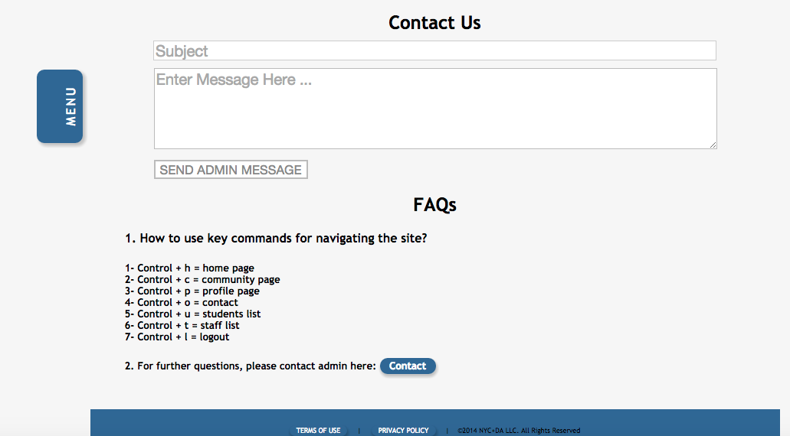
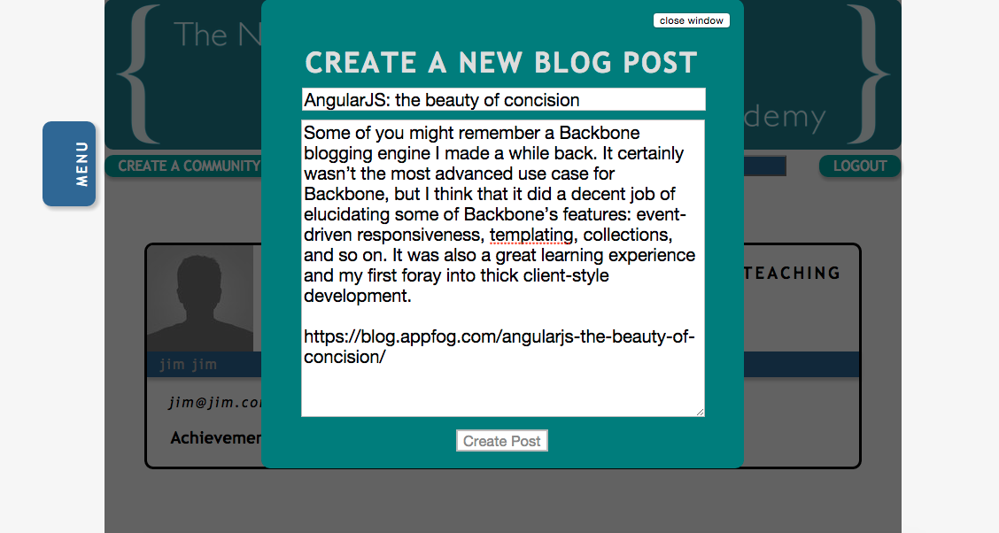
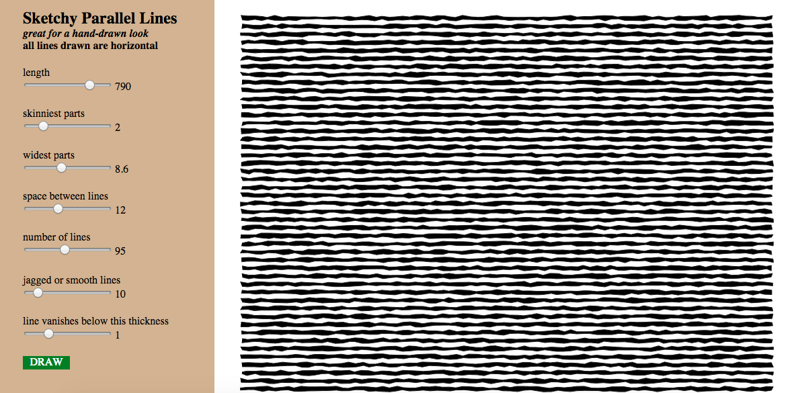

This Ruby-based program is hosted on Heroku.
A friend asked me to create a program that could keep track of family member's predictions of what teams will win what games for the upcoming week.
You are either assigned as a user, who can only pick teams for this week, and view current standings. (Standings show how well other family members predict the games.) Or you are assigned an Admin role, where you can add new games to the list, enter which teams one, and on the main index page, view the teams that every family member selected that week.
To log in as Admin use zed@zed.com as the username, and zed12345 as the password.
If you want to log in as a User, try jane@jane.com as the username, and jane12345 as the password.
Final NYC+DA project - Google chart samples
This program lets you sample a number of chart types using Google Charts program.
Area, Bar, Step, Column, Line, Pie charts can be accessed when the first column of data is marked "string". The other type of charts can be seen when the data type select bar is marked "number".
Data can be uploaded via a Google Sheets URL.
Feel free to copy and paste the export code into your favorite text editor. Once that exported HTML code is uploaded to a browser, it will act as an interactive chart.
KEYBOARD SHORTCUTS:
ctrl + r = shortcut to refresh chart window
ctrl + p = shortcut to export chart to png image
This Rails project was created with the help of fellow classmate Steven Ossorio.
He came up with the great idea of having control keys to help users quickly navigate the site.
Control + H takes you to the home page. Control + P takes you to your profile page.
To view a complete key listing, use Control + O.
 One security feature of the site is that it is invite only. No matter what variation of a RESTful url that you would type in,
you will not be able to access any part of the site unless you are logged in.
To log in, please try email: zed@zed.com password zed. If for some reason that doesn't work, try email mia@mia.com password mia. That should allow you to see the rest of the site. Contents include the home page, where you can view blog posts. A community page for people having specific technical issues. A staff page which lists current teachers. And a student page, showing who is currently enrolled.
I scanned a children's primer book, published in the 1840s, to see if I could use that font as a typeface.
Enter a line of text in the input window. If you type a character that is not part of the scanned alphabet (or part of the accepted special characters), that character is auto-deleted from the input.
Hit submit line of text to see your typed message in the 1840s schoolbook font.
Built with JavaScript and SVG.
This project was an attempt to create SVG lines that look hand drawn. Rather than making complex pictures, I focused on creating parallel lines which could be used as shading in a paint program.
Press the DRAW button on the lower left corner to draw new lines. Change the slider values to adjust width and spacing.
Each time DRAW is pressed, the program generates random SVG coordinates based upon the HTML slider values.
